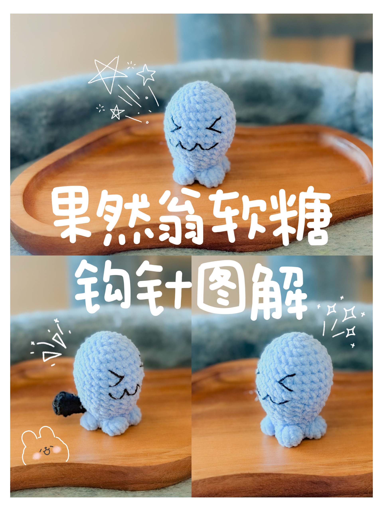

Puffy Kitty Crochet Pattern
果然翁软糖
由果然翁草稿整理出的正式软糖图解，包含主体和黑色尾巴。
Wobbuffet gummy pattern converted from the draft, including the body and black tail.

打开交互式图解 / Open interactive pattern
主体图解
| 轮数 | 中文 | US | UK |
|---|---|---|---|
| R1 | 环起6x | magic ring, 6 sc | magic ring, 6 dc |
| R2 | 6v | 6 inc | 6 inc |
| R3 | 6(x, v) | 6(sc, inc) | 6(dc, inc) |
| R4 | 6(x, v, x) | 6(sc, inc, sc) | 6(dc, inc, dc) |
| R5-8 | 24x | 24 sc | 24 dc |
| R9 | 4(x, A, x) | 4(sc, dec, sc) | 4(dc, dec, dc) |
| R10 | 20x | 20 sc | 20 dc |
| R11 | 4(3x, A) | 4(3 sc, dec) | 4(3 dc, dec) |
| R12 | 16x | 16 sc | 16 dc |
| R13 | 4(x, A, x) | 4(sc, dec, sc) | 4(dc, dec, dc) |
| R14 | 12x | 12 sc | 12 dc |
| R15 | 4(x, B, x) | 4(sc, bobble, sc) | 4(dc, bobble, dc) |
| R16 | 12x | 12 sc | 12 dc |
备注
R15 的 B 是底部凸起的位置。
按成品比例填充并调整形状。
记号
x = 短针，v = 加针，A = 减针，B = 泡泡针，ch = 锁针，T = 中长针，F = 长针。